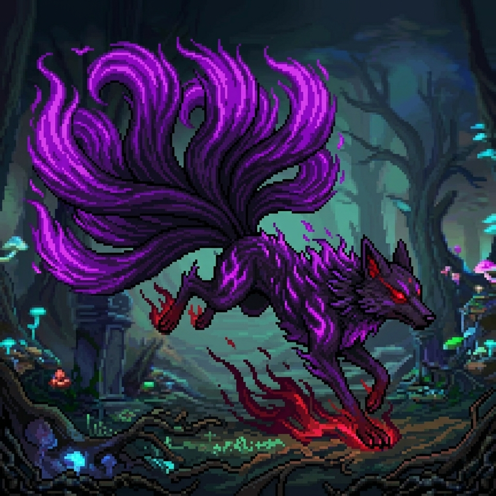

在幽魂森林的古老傳說中，曾有一隻看似平凡的靈狐，體內卻沉睡著足以撼動地脈的九尾血脈。這份深藏的潛能，最終吸引了太古火龍伊格尼斯的目光。為了見證這股傳奇力量的覺醒，火龍引導森林中積累萬載的暗影幽魂為引，並注入自身純淨的原始龍焰，以此古老儀式洗禮靈狐的靈魂。隨著血脈的共鳴，餘燼幽狐於紫色的氤氳中翩然降世。
它的九條尾巴化作了暗影與烈焰的交響樂章，承載著幽魂的意志與龍焰的燥熱。它不再受限於肉身的桎梏，轉而成為穿梭於虛實邊界的靈性主宰。在克羅姆平原的勇士眼中，餘燼幽狐的存在猶如一場華麗卻致命的幻夢——當紫色的餘燼在林間漫天飛舞之時，便象徵著古老血脈的威儀已降臨人間。
描述： 當九曜光華收斂，被火焰與幽魂鎖定的因果律早已注定。任何妄圖以速度或身法逃脫的靈魂，終將在幻狐的哭嚎聲中，被那股永恆的渴求強行解構。
視覺感： 九尾末端同時噴射出數枚由靈火構成的幻火幽狐彈 。如一群嗅到鮮血的野獸，以極具侵略性的軌道全方位折返、追蹤目標。
描述： 將九尾之力合而為一，化作貫穿現實與虛幻的唯一真理。在這一擊面前，所有的防禦、所有的掙扎，都將隨著爆裂的紫色餘燼一同歸於無間。這是狐火的極意，更是靈主對弱者的最終憐憫。
視覺感： 九條尾巴合攏，在尾端匯聚成一顆直徑巨大的紫黑色光球。隨後，光球化作一隻帶著猙獰表情、燃燒著熊熊紫火的巨大狐首炮彈。炮彈帶著撕裂空間的震盪波，以絕對的直線向前方橫貫而出。
描述： 這是來自靈魂深處的顫慄。當胸口的光芒超越太陽，現實將被切碎成無數紫色的殘影。
視覺感： 餘燼幽狐 的胸口綻放出極其耀眼的紫色火光，雙足騰空，呈現出釋放生命本源的姿態。隨即，胸口的火光化作無數道紫紅色的弧形火焰彈幕 向前方扇形噴發。每一枚彈幕都帶著螺旋狀的像素尾煙，如同一群發瘋的紫色螢火蟲，在空中交織、重疊，將戰場的前方空間完全填滿，形成一片動態的、燃燒著紫色幻夢的死亡幕簾。